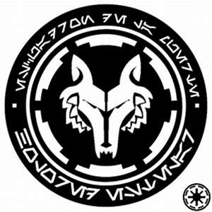

104th Purpose
Home
104th
High Command
Important Figures
Purpose
212th
High Command
Important Figures
Purpose
416th
High Command
Important Figures
Purpose
501st
High Command
Important Figures
Purpose
The 104th was used for hostage rescue and would help with interogations of captured officers. They also played roles as frontline attack units making them very versatile.

Important Missions-
Mission to Quarmendy
Siege of Hisseen
Rising Malevolence
Battle of Khorm
First Battle of Felucia
Discovering a message
Rescue on Vanqor
Citadel rescue
Return to Felucia
Mercy mission on Aleen
Rescuing Adi Gallia
Battle of Kadavo
Investigation on Oba Diah's moon